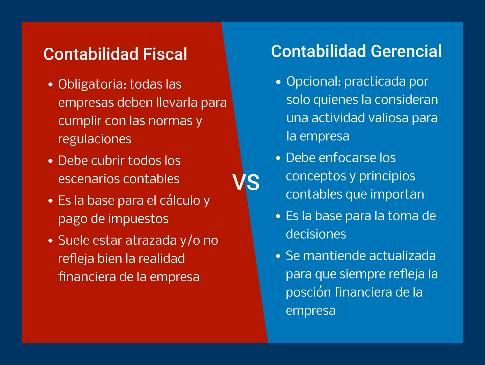
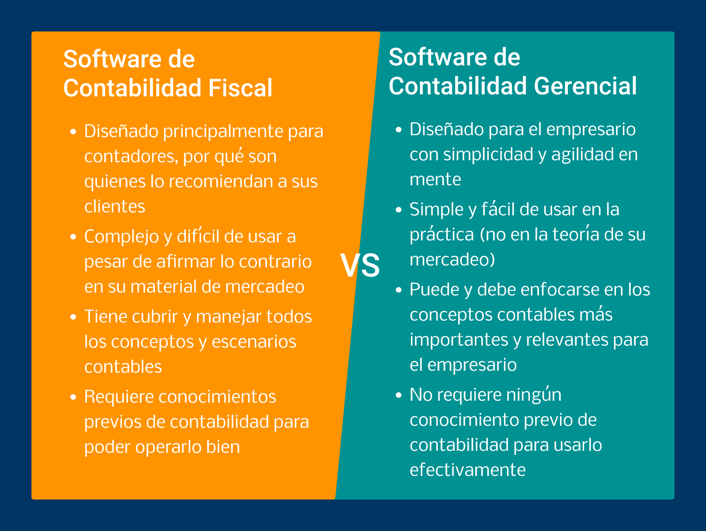

¿Qué es la Contabilidad Gerencial?
Si prefiere, usted puede ver este video con la presentación resumida de este artículo.
Hola, mi nombre es Federico y soy uno de los creadores de myAbakus.
En lugar de tratar de hacerle una demostración del software en 3 minutos (lo cual es imposible) o presentarle una animación gráfica para que usted entienda lo que puede hacer con él (lo cual está de moda), le voy a explicar la razón por la que existe y su posición en el mercado de software contables.
Decidí hacer esto por qué estoy convencido de que con tan solo esta explicación, usted va a poder determinar si myAbakus está alineado con lo que usted necesita y está buscando para su empresa, sin necesidad de crear una cuenta y probar el software. En otras palabras, crear una cuenta y evaluar el software solo hace sentido, si usted está de acuerdo con nuestro punto de vista en el mercado y tiene el problema que nuestro producto está enfocado en resolver.
Teniendo esto claro, entremos en materia.
El punto o principio por el que debemos comenzar es que en el mundo hay dos tipos de contabilidades: contabilidad fiscal y la que yo llamo contabilidad gerencial. La contabilidad fiscal no requiere mucha explicación: todas las empresas están obligadas a hacerla para poder cumplir con sus obligaciones tributarias. La contabilidad gerencial, por el otro lado, es para controlar y entender las finanzas de una empresa y dar soporte en la toma de decisiones.
Alguien podría decir que yo me estoy inventando una división que no existe y que la contabilidad es una sola y se usa tanto para la parte fiscal como gerencial. Ese argumento quizás podría ser válido en una gran empresa, pero usted y yo sabemos que en el mundo real de las empresas pequeñas no aplica. De hecho, la contabilidad gerencial no es obligatoria ni practicada en la mayoría de empresas pequeñas y la contabilidad fiscal no siempre refleja adecuadamente la situación financiera de una empresa pequeña o mediana.

La contabilidad gerencial no es obligatoria ni practicada en la mayoría de empresas pequeñas y la contabilidad fiscal no siempre refleja adecuadamente la situación financiera de una empresa pequeña o mediana.
Entonces, el primer punto en el que tenemos que estar de acuerdo para que valga la pena que continúe leyendo este articulo es que hay dos tipos de contabilidad (la fiscal y gerencial) que resuelven problemas diferentes. Asumiendo que ese es el caso y que todavía tengo su atención, el paso lógico a seguir es explicarle la diferencia entre un software de contabilidad fiscal y un software de contabilidad gerencial.
El software de contabilidad fiscal tiene una característica principal que es muy clara y evidente al momento de usarlo: está diseñado para el contador. Esto además de ser evidente, va en contra de todos los argumentos que se hacen sobre simplicidad y facilidad de uso en el material de marketing.
Ahora bien, esta es sin duda la estrategia correcta para una empresa de software contable que quiere maximizar su alcance y participación en el mercado. Por qué los contadores son el principal canal de distribución para software contables por medio de las recomendaciones que ellos le hacen a sus clientes de que software usar.
Por lo tanto, la persona más importante para la empresa de software contable no es usted como usuario final, sino el contador como agente y distribuidor. Y eso explica por qué las empresas de software contable suelen regalarle el software a los contadores y facilitarles el manejo de las cuentas de sus clientes.
La persona más importante para la empresa de software contable no es usted como usuario final, sino el contador como agente y distribuidor.
A pesar de ser muy exitoso, este modelo tiene una debilidad clara que nosotros queremos explotar. Y es que el trabajo, las necesidades y las preferencias del contador son muy diferentes a las del empresario. Por lo cual, nuestra posición en el mercado de software contables es ofrecer un software que está claramente diseñado para el empresario y se enfoque en sus necesidades (no las del contador).
El contra argumento de cualquier empresa de software contable va a ser que su producto no tiene ese problema por qué tanto los contadores como los usuarios finales lo "aman". No nos convence ese argumento y vemos que la mayoría de usuarios finales simplemente están siguiendo las recomendaciones de su contador sobre qué software deben usar.
La realidad es que es muy difícil crear un producto que va a ser muy satisfactorio tanto para contadores como para empresarios, por la simple razón de que tienen idiosincrasias y necesidades muy diferentes. Por eso decidimos que nuestro software pusiera las necesidades del empresario como la base para su diseño y funcionalidad. Y se mantuviera enfocado en los conceptos y procesos contables que son valiosos para el empresario.
Es muy difícil crear un producto que va a ser muy satisfactorio tanto para contadores como para empresarios, por la simple razón de que tienen idiosincrasias y necesidades muy diferentes.
No importa si dichos conceptos y procesos solo cubren un 20% del universo contable. Pues al final del día la ley del 80/20 aplica aquí y solamente el 20% más importante es lo que usted necesita entender y poner en práctica para que la contabilidad pase de ser un problema más por resolver a convertirse en una herramienta valiosa para su empresa.

Básicamente, nosotros aspiramos a ser la mejor opción en el mercado para aquellos empresarios que quieren practicar contabilidad gerencial y dejar que el contador se encargue de la parte fiscal. Y no nos importa que el universo de usuarios potenciales para un software de contabilidad gerencial sea mucho más pequeño que el de usuarios potenciales para un software de contabilidad fiscal.
Recuerde mi punto anterior de que todas las empresas tienen que hacer contabilidad fiscal, pero son pocas las que realmente practican contabilidad gerencial, especialmente cuando hablamos de empresas pequeñas y medianas. Una buena forma de entender esta realidad es examinar lo que ocurre en una gran empresa, donde suele haber un departamento de contabilidad separado del departamento de finanzas.
Es claro que ambos departamentos pertenecen a la misma área organizacional y trabajan en conjunto. Pero el departamento de finanzas en una gran empresa es el que suele planear y tomar decisiones financieras, usando como base la información que produce el departamento de contabilidad.
El departamento de finanzas en una gran empresa es el que suele planear y tomar decisiones financieras, usando como base la información que produce el departamento de contabilidad.
En una empresa pequeña, donde los recursos suelen ser limitados, la función del departamento de contabilidad la suple un contador externo. Y la función del departamento de finanzas suele no existir por qué el dueño de la empresa no tiene la voluntad o las herramientas para ponerla en práctica.
En una empresa pequeña, la función del departamento de contabilidad la suple un contador externo y la función del departamento de finanzas suele no existir.
Además recuerde que la información que el contador maneja suele estar atrasada, puede no estar ajustada a la realidad y no ser útil o fácil de interpretar para el empresario. Por eso queremos invitarlo a que establezca la función del departamento de finanzas en su empresa implementando nuestro software y usándolo regularmente.

Queremos que con cuentas claras, en orden y al día, nuestro software se convierta en la fuente de la realidad financiera de su empresa. Y que además de ser una herramienta útil en la administración diaria de su empresa, le permita entender claramente su posición financiera y tomar decisiones para mejorarla.
Terminando y volviendo a lo que dije al principio del video, no tiene sentido que usted cree una cuenta y pruebe nuestro software, si su realidad y el problema que está tratando de resolver son diferentes a lo que acabo de explicarle. De hecho, una buena prueba de afinidad entre nuestro software y sus necesidades es que no hay nada nuevo o novedoso en todo lo que le acabo de decir. Es una realidad que hace parte de su propia experiencia y lo único que yo he hecho aquí es articularla para que sea más clara y evidente.
Entonces, si el control financiero de su empresa es importante para usted y la contabilidad gerencial es más una necesidad que una buena idea, lo invitamos a que cree su cuenta y evalúe nuestro software. Pero teniendo claro que va a encargar a su contador de lo único que puede y debe hacer: asegurase que su empresa cumpla con todas las normas y regulaciones pertinentes.
No estamos de pelea con su contador y nuestro software puede exportar su información en el formato que sea más fácil de consumir para él o ella. Pero si lo que usted está tratando de resolver es un problema fiscal, siguiendo las recomendaciones y preferencias de su contador, es claro que nuestro software no va a ser la mejor opción y no vale la pena que gaste tiempo probándolo.
Le agradezco mucho por su atención y por tomarse el tiempo de leer este articulo, y espero que más allá de ser informativo, le haya resultado útil para decidir qué tipo de software contable es el adecuado para su empresa.